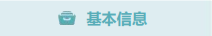
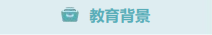
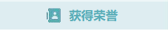
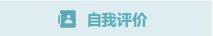

李翰婉

- 电话：15992590363
- 邮箱：3204169315@qq.com
- 性别：女
- 政治面貌：共青团员

深圳职业技术大学
通信软件专业
专业成绩：年级前25%

- 带领班级荣获“五四红旗团支部”
- 电信易班毕业季主题活动中，荣获“三等奖”
- 深职大“优秀共青团员”
- 积极分子培训班“优秀学员”

性格开朗
工作认真
擅长沟通
团队协作
2023.11-2023.12 第九届中国“互联网+”大学生创新创业大赛
作为该项目主要负责人，积极沟通，分配组内各人员职务，将项目前期的资料收集，ppt制作等都能够合理安排适台的人员，团队共同协作，最终项目等级为优。这一成绩不仅是对项目的认可，更是团队努力的结晶。这次大赛更让我提升了专业能力、团队协作能力，更坚定了在创新创业道路上继续前行的决心。
2024.03-2024.04 低空“星链”商业计划书
在该项目中主要负责前期的项目资料整理收集，项目总结报告，ppt制作以及一些项目策略的编写。我负责市场调研部分，通过线上线下多种渠道，收集行业数据、分析市场需求，为项目精准定位提供有力依据。同时，我还参与商业计划书的撰写与完善，将项目优势、商业模式清晰呈现。能够熟练掌握办公软件。
- 华为HCIA证书
- 英语四级（CET-4）
- 普通话二级证书
- C1类驾驶证
2023.11-至今 深职大崇理书院“青马工程”培训班成员
通过学校层层选拔，从五百人中成功入选该培训班，并拿到院青马工程结业证书。经过教育培训、实践锻炼等方式，学习党团相关理论知识，提高自身的思想素质、政策理论水平
2023.09-至今 2023级通信软件2班生活委员
在职期间完成对班级40位班级成员的爱心基金管理，与其他班干部一起组织策划“感恩助班”主题活动
2024.06-至今 崇理书院学生党员先锋社常务委员
完整记录学院每一次党支部会议，严谨撰写学院党支部的会议记录本，带领学院党员完成档案整理，对下一届先锋社干部进行培养。在职期间与社区开展包括“扎纪律准绳，染清廉本色”，“光影映初心，担当书华章”等多项党支部活动，促进了院党支部与社区党支部共建，组织并维护了超600人次的志愿服务活动，举办了“匠艺红心粘土绘史”联合活动，广获教师好评
2024.05-至今 星巴克兼职
在职期间，与其他同事关系融洽，能够快速上手工作，快速准确出品饮品，学习能力获得店长及同事的称赞，在店时，能够维护好客户关系，友善应对争议客户并灵活解决问题